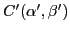
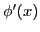

Center of curvature
The limiting position of the intersection of normals at neighboring
points. Let the equation of a curve be
 |
(14.10) |
Figure 14.3:
Geometric visualization of the center of curvature.
|
The equations of the normals to the curve at two neighboring
points and  are (using (6.2) [§6.3]),
are (using (6.2) [§6.3]),
If the normals intersect at
, the
coordinates of this point must satisfy both equations, giving
Now consider the function of x defined by
in which  has been replaced by
has been replaced by  from (14.10).
Then equations (14.11) show that
from (14.10).
Then equations (14.11) show that
But then, by Rolle's Theorem (§13.1),
 must vanish for some value of  between
between  and
and
 say
say  . Therefore
. Therefore  and
and  are determined by the
two equations
are determined by the
two equations
If now approaches as a limiting position, then
approaches , giving
and
will approach as a limiting position
the center of curvature
corresponding to
on the curve. For if we drop the subscripts and write
the last two equations in the form
it is evident that solving for and will
give the same results as solving (14.4) and
((14.5) for  and
and  . Hence we have the following
result.
. Hence we have the following
result.
Theorem 14.3.1
The center of curvature  corresponding to a point
corresponding to a point  on a curve
is the limiting position of the intersection of the normal
to the curve at with a neighboring normal.
on a curve
is the limiting position of the intersection of the normal
to the curve at with a neighboring normal.
david joyner
2008-08-11